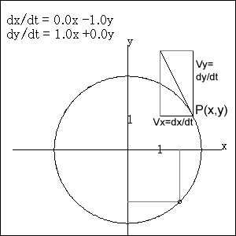

The figure shows Point P travelling on x-y plane.When the velocity of a point is determined by its location (x,y) as
dx/dt = a x + b y the system is called linearly autonomous. Now Vx = -y and Vy = x that the orbit of P makes a circle.
Grasp the concept while observing other examples. |
 |